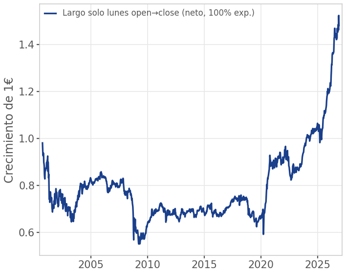

Veredicto exploratorio
Con datos diarios la pauta no muestra ventaja explotable: el lunes es el mejor día de la semana
en términos relativos, pero el efecto absoluto no cubre costes. Ningún objetivo del barrido lo rescata, y con
coste de 0,05% por lado el ensayo es negativo. Conclusión limitada a esta proxy y granularidad.

Retorno medio apertura → cierre por día de la semana (NQ, neto 0,01%/lado)
| Día | n | Media | Desv. | t |
|---|
Barrido de objetivo fijo (lunes, neto 0,01%/lado)
Entrada a la apertura del lunes; si el máximo del día alcanza el objetivo,
salida al precio objetivo; si no, salida al cierre. Sin stop (la ventaja de la estructura sin stop es que el dato
diario basta para saber si el objetivo se tocó).
| Objetivo | Trades | % aciertos | Media/trade | Sharpe sem. anualizado | % veces tocado |
|---|
Walk-forward anual con selección de objetivo objetivo elegido solo con datos previos
Cada año se elige el objetivo (incluido «sin objetivo») que maximizaba el
Sharpe semanal con los lunes anteriores (ventana expansiva, 5 años mínimos) y se evalúa en el año siguiente.
| Año | Objetivo elegido | n | Retorno | Media/trade |
|---|
Dónde falla
• El efecto lunes es el mejor de la semana en relativo pero insignificante en absoluto (ver test de permutación).
• Con costes realistas para retail (0,05%/lado) todo el barrido es negativo.
• Años malos severos: 2008 (-21%) y 2000-2002 negativos; sin stop, un lunes malo solo lo corta el reloj.
• Las barras diarias no ven el camino intradía ni la hora real de entrada/salida; harían falta datos intradía para un test con mayor granularidad.
• Con costes realistas para retail (0,05%/lado) todo el barrido es negativo.
• Años malos severos: 2008 (-21%) y 2000-2002 negativos; sin stop, un lunes malo solo lo corta el reloj.
• Las barras diarias no ven el camino intradía ni la hora real de entrada/salida; harían falta datos intradía para un test con mayor granularidad.